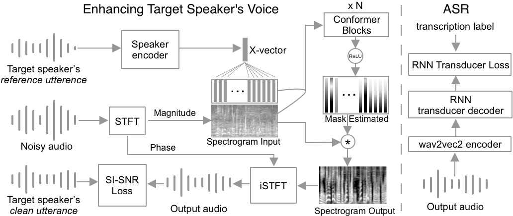

Targeted Voice Separation by Speaker-Conditioned and Conformer
System architecture:

Random audio samples from LibriSpeech testing set
Meaning of the columns in the table below:
The noisy audio input to the model. It's generated by summing the clean audio with interference
audio from another speaker. Adding noise and reverberate are sometime used
The output from the enhancing model.
The reference audio from which we extract the x-vector. The x-vector is another input to the enhancing model.
This audio comes from the same speaker as the clean audio.
The clean audio, which is the ground truth.
Noisy audio input
Enhanced audio output
Reference audio for x-vector
Clean audio (ground truth)
Dataset information
For training and evaluating our ConVoiceFilter models, we had been using the
LibriSpeech datasets, Whamr, MUSAN, Reverb BUT, SLR RIR.